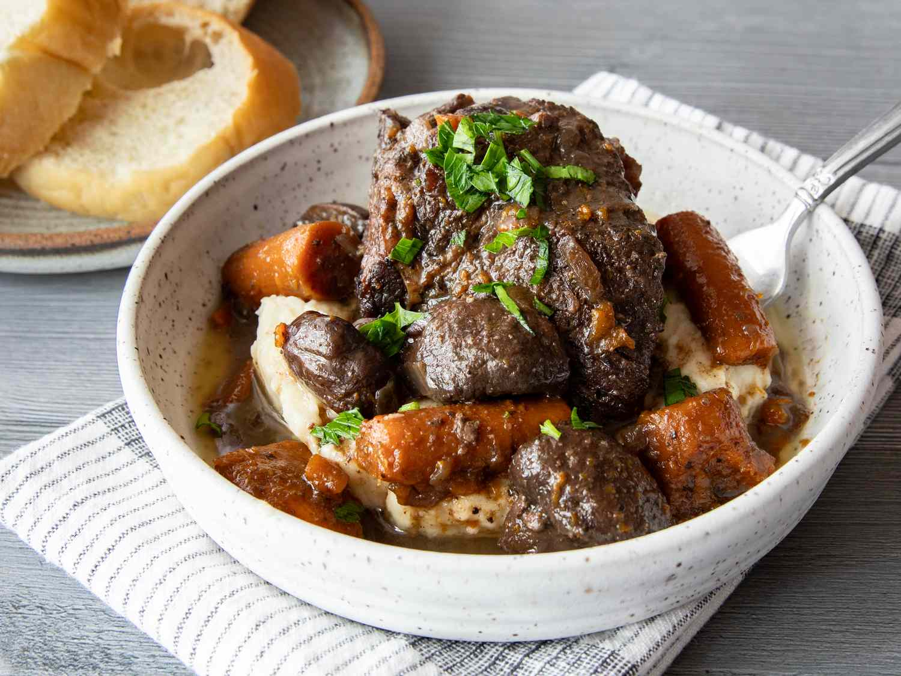

Braised Beef

Description
Braising is a cooking method that involves slowly cooking meat in a covered pot with some sort of liquid. In the case of this recipe, chuck roast is braised in a mixture of beef broth and red wine. Braising is similar to stewing, but it requires less liquid.
Ingredients
- 3 1/2 pounds boneless beef chuck roast
- 5 teaspoons kosher salt, divided
- 2 1/2teaspoons freshly ground black pepper, divided
- 2 teaspoons garlic powder
- 4 teaspoons olive oil
- 2 tablespoons butter
- 1 medium inion, chopped
- 1 pound cremini mushrooms, halved
- 3 medium carrots,cut into 2 inch pieces
- 1 head garlic,cut in half lengthwise
- 1 cup red wine
- 3 sprigs thyme
- 2 bay leaves
- 2 teaspoons Worcestershire
- 2 cups beef broth, or more as needed
- 2 tablespoons chopped fresh parsley
Steps
- Gather all ingredients and preheat the oven to 350 degreesF(175 degrees C)
- Season beef pieces evenly on all sides with 3 1/2 teaspoons salt, 2 teaspoons pepper, and garlic powder
- Heat oil in large skillet over high heat.Add beef, reduce heat to medium high and cook undisturbed until it releases easily from the skillet and a golden brown crust has formed, about 4 minutes. Flip pieces and continue to cook until browned on all sides. Remove meat form the pan and set aside.
- Return skillet ot medium-high heat and add 2 tablespoons butter to the drippings in the pan. When butter has melted add onion, mushrooms and carrot and cook 5 minutes, stirring often, scraping to release any browned bits from the bottom. Add garlic and cook for 1 minute.
- Stir in wine and scrape to release any more bits form the pan. Return the meat to the pan, along with any accumulated juices and add thyme, bay leaves and Worcestershire.
- Pour in beef broth just enough that it comes up 2/3 of the way up on the beef(do not fully submerge the meat in liquid). Bring the mixture to a simmer.
- Cover and place in preheated oven until meat is very tender, 2 to 2 1/2 hours.
- Server and enjoy